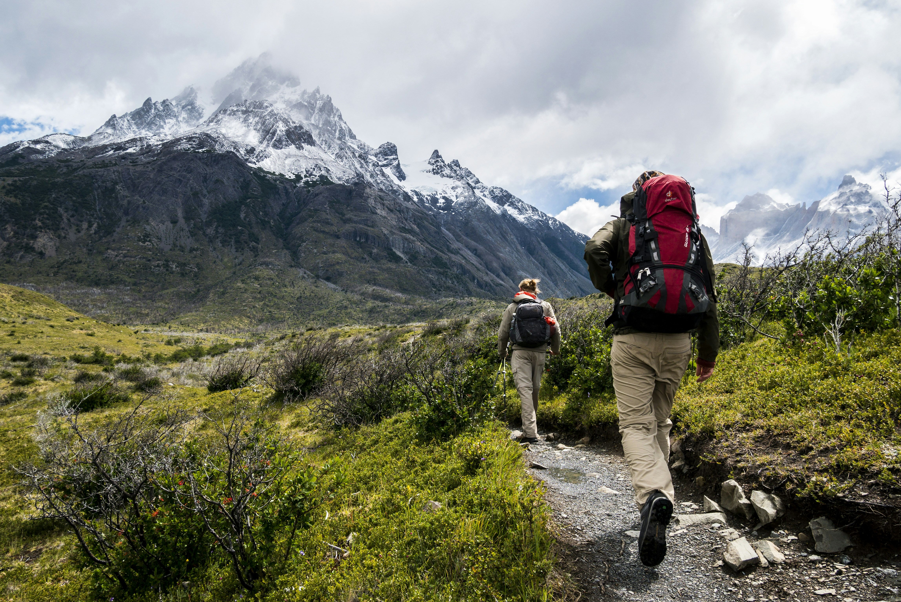
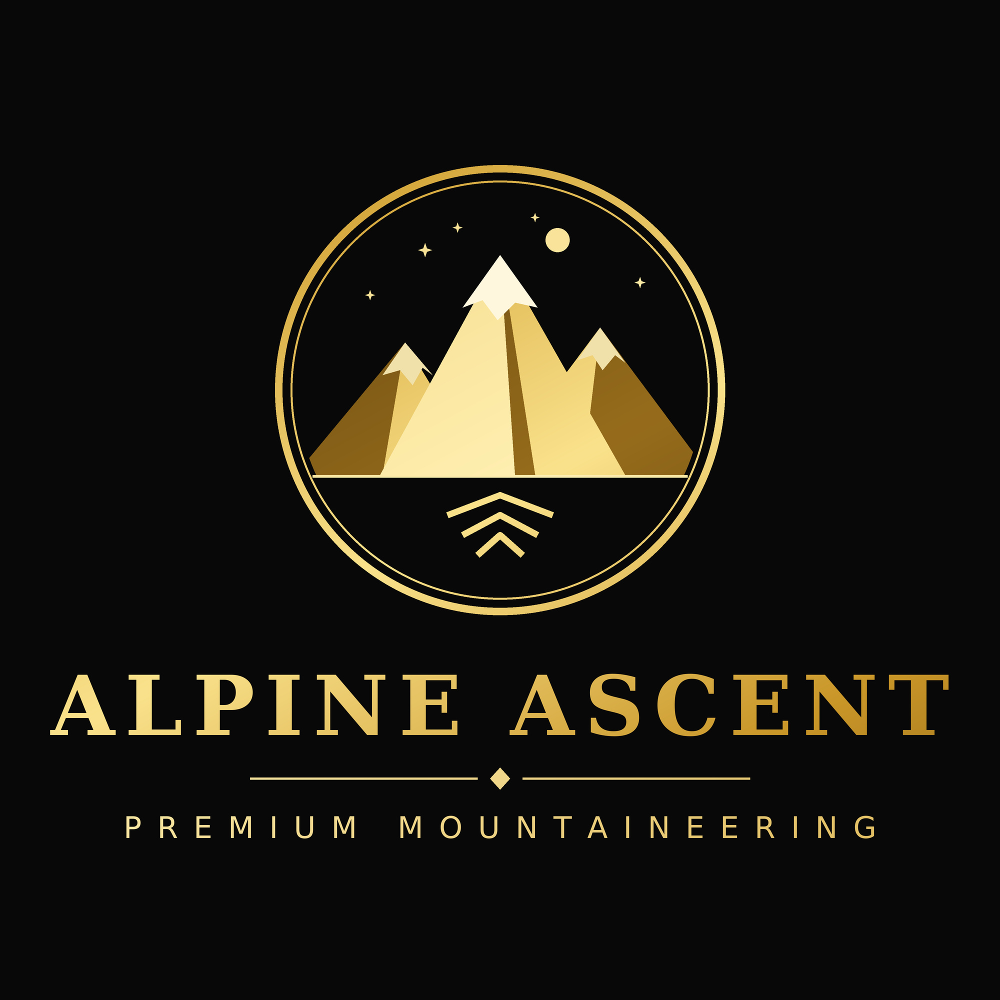
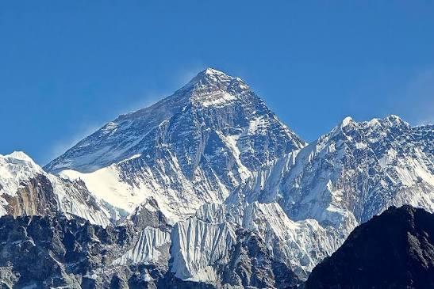
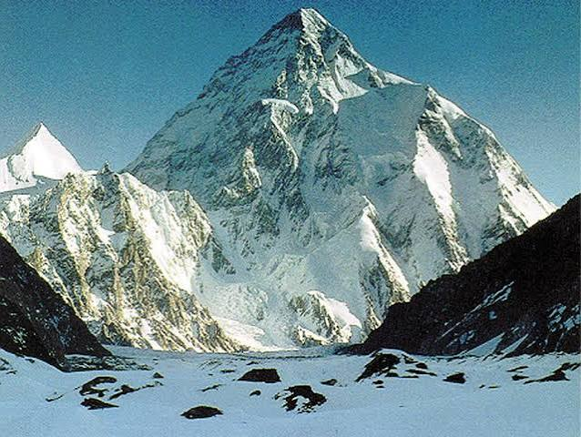

01
Hiking & Trekking
Walking through mountain trails and natural landscapes over short or extended journeys.
EXPLORE THE EXTRAORDINARY

DISCOVER THE WORLD ABOVE
Explore the extraordinary world of mountaineering. Discover legendary peaks, master climbing techniques, and experience the spirit of adventure.
THE WORLD OF ADVENTURE
A journey of courage, endurance and exploration.

Mountaineering is the sport and activity of climbing mountains. It involves physical fitness, technical knowledge, mental strength and careful planning.
Mountaineers travel through challenging environments including snow-covered peaks, glaciers, rocky terrain and steep mountain faces.
It combines hiking, rock climbing, ice climbing, navigation, camping and survival skills.
DISCOVER ITS HISTORY →Mount Everest Height
First Confirmed Everest Summit
Eight-Thousanders
First Annapurna Summit
THE LEGACY OF EXPLORATION
From early mountain exploration to modern expeditions.
Jacques Balmat and Michel-Gabriel Paccard reached the summit of Mont Blanc, an important milestone in modern mountaineering.
European climbers began exploring and successfully climbing major Alpine peaks.
Maurice Herzog and Louis Lachenal reached Annapurna I, the first confirmed ascent of an 8,000-metre mountain.
Sir Edmund Hillary and Tenzing Norgay successfully reached the summit of Mount Everest.
GPS, satellite communication, advanced clothing and modern safety equipment transformed mountaineering.
CHOOSE YOUR CHALLENGE
Different ways to explore the mountains.

Walking through mountain trails and natural landscapes over short or extended journeys.

Climbing natural rock formations using ropes, harnesses, anchors and specialized equipment.

A combination of rock, snow and ice climbing in high-altitude mountain environments.

Ascending frozen waterfalls and icy mountain surfaces with ice axes and crampons.

Long and carefully organized journeys to remote and challenging mountain peaks.
Climbing mountains in winter conditions, involving snow, ice and extreme cold.
MASTER THE MOUNTAIN
Essential skills used by mountaineers.
Understanding rope systems, knots, belaying and safe climbing connections.
Using maps, compasses and GPS devices to plan and follow mountain routes.
Using crampons, ice axes and appropriate movement techniques on snow and ice.
Allowing the body to adjust gradually to reduced oxygen at higher altitudes.
Reading forecasts and recognizing changing mountain weather conditions.
Learning first aid, rescue communication and emergency response procedures.
REST IN THE WILDERNESS
Safe places to rest during mountain expeditions.

Proper shelter is essential for protection from wind, snow, rain and extreme temperatures. Mountaineers select shelters according to terrain, weather and expedition requirements.
Always select a safe campsite away from avalanche paths, unstable slopes and other natural hazards.
RESPECT THE MOUNTAIN
Understanding risks is essential for every expedition.
Illness caused by insufficient acclimatization at high altitude.
Rapid movement of snow down a mountain slope.
Sudden storms, high winds, snow and freezing temperatures.
Loose rocks and falling debris can cause serious injuries.
Deep cracks in glaciers that may be hidden under snow.
A dangerous drop in body temperature due to cold exposure.
HUMAN ACHIEVEMENTS
Some remarkable milestones in mountaineering history.
| ACHIEVEMENT | PERSON / DETAILS | YEAR |
|---|---|---|
| Highest Mountain | Mount Everest – 8,848.86 m | 2020 measurement |
| First Everest Summit | Edmund Hillary & Tenzing Norgay | 1953 |
| First 8,000m Peak | Annapurna I – Maurice Herzog & Louis Lachenal | 1950 |
| First Winter Everest Ascent | Leszek Cichy & Krzysztof Wielicki | 1980 |
| First Woman on Everest | Junko Tabei | 1975 |
Historical milestones are shown here; records and current record-holder details can change.
JOIN THE GLOBAL COMMUNITY
Explore established mountaineering organizations around the world.
Outdoor education, climbing courses and mountain activities.
VISIT WEBSITE ↗ VIEW LOCATION ↗A historic organization dedicated to climbing and alpine exploration.
VISIT WEBSITE ↗ VIEW LOCATION ↗Promotes mountaineering, climbing education and mountain tourism in Nepal.
VISIT WEBSITE ↗ VIEW LOCATION ↗International organization supporting climbing, mountaineering and safety.
VISIT WEBSITE ↗ VIEW LOCATION ↗Discover the world's legendary mountain regions.
STORIES THAT INSPIRE
Historic journeys that changed mountaineering forever.

Edmund Hillary and Tenzing Norgay achieved one of the greatest milestones in climbing history.

Achille Compagnoni and Lino Lacedelli reached the summit of K2 during an Italian expedition.
CAPTURE THE ADVENTURE
Beautiful views and unforgettable mountain moments.


Explore educational and adventure videos.
THE FUTURE OF EXPLORATION
Technology and innovation in modern mountaineering.
Modern navigation and satellite messaging devices help climbers communicate in remote locations.
Lightweight materials and improved equipment enhance comfort and performance.
Forecasting tools help expedition teams monitor storms, wind and changing conditions.
Emergency beacons and satellite systems help rescue teams locate climbers in distress.
CLIMB SMART • STAY SAFE
Important principles for a safer mountain adventure.
Always plan your expedition before starting the journey.
Check weather forecasts and mountain conditions.
Carry appropriate clothing, food, water and equipment.
Never climb beyond your experience and physical ability.
Inform someone about your route and expected return time.
Respect nature and leave no waste behind.
Learn first aid and basic mountain rescue procedures.
Turn back when weather or safety conditions become dangerous.